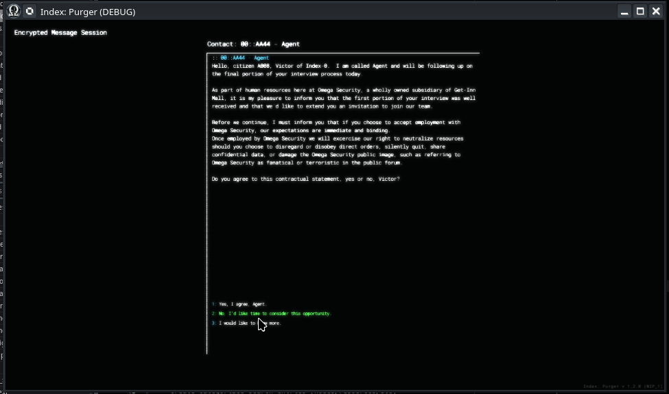

Module: pre_mission_dialog
Documentation last edited: October 23, 2025 at 14:33 UTC
Description
Модуль "Предмиссионный Диалог" создаёт интерфейс диалога, который использует граф диалогов "Dialogue System". Как и говорит название, он полезен для случаев, когда ты вот-вот начнешь миссию и, вероятно, нужно дать игроку кого-то, с кем можно поговорить об этом.

Ну, это же заставит игрока чувствовать себя менее одиноким, верно? Хотя, не уверен в этом. В некотором смысле, смотреть на экран во время переписки с буквальной стеной текста может заставить тебя чувствовать себя более одиноким. Разве это важно? Эта стена текста всё равно с тобой разговаривает. После этой стены текста будет буквальная перестрелка. Чувствовал бы ты себя одиноко в буквальной перестрелке? Иногда я да... потому что я разработал это дерьмо и знаю, что внутри эти NPC - ничто. Чёрт, думаю, мне действительно стоило уделить внимание описанию того, как это работает...
PreMissionDialog
- это просто нода, наследующая от
Control
, которую ты можешь инстансить в любой
LocationBase
и на этом закончить. В текущем дизайне ты должен использовать эту штуку, чтобы превратить всю локацию в продвинутую стену текста *с эмоциями*.
Все диалоги, используемые
PreMissionDialog
, создаются в редакторе диалогов
"dialogue_system"
, так что, пожалуйста, загляни туда, если захочешь создать новый диалог.

На самом деле, настройка очень проста, в основном тебе просто нужно обращать внимание на экспорты справа. Вот и всё. Теперь ты можешь сделать что-то вроде "50 оттенков Index" или что-то в этом роде. Если захочешь...
General Information
Root directories list
assets, docs, src
Nodes
dialog
option
PreMissionDialog
Classes
Resources
None
Other Scripts
None